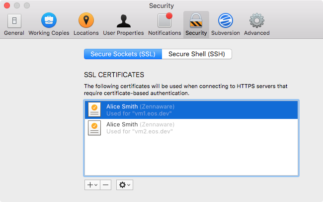

The following sections provide an introduction to certificate-based authentication and describe how to configure Cornerstone to authenticate using a certificate.
Subversion repositories commonly require a username and password to be provided by the user to verify their identity. The SSL/TLS protocol (upon which HTTPS is based) provides a more secure and flexible alternative: certificate-based authentication.
Certificate-based authentication provides several advantages over traditional password-based authentication, but the primary difference is that while password-based authentication relies on secrets defined and managed by the user, certificate-based authentication utilizes secrets issued and managed by the server or, more accurately, the certificate issuer or authority.
Other advantages of certificates include:
Certificates are not without their disadvantages:
If an HTTPS server is configured to require a certificate then a client app such as Cornerstone will be unable to connect to the server unless the user can present a certificate that meets the server’s requirements. The enforcement of the requirement for a certificate serves two purposes:
Thus certificates can be used for authentication, i.e. verifying (or authenticating) the identity of the user.
Additional requirements can be placed on the client certificates to restrict access to those users authorized to access the server.
Examples of requirements commonly placed on client certificates include:
Thus certificates can also be used for authorization, i.e. to verify that the user is authorized to access the server.
A certificate used for the purpose of authentication must contain a private key—a secret known only by the issuer and the user—so the same care should be afforded the storage of certificates as passwords.
As with passwords, Cornerstone does not store certificates directly. Instead, the app delegates this task to the keychain, the standard system component responsible for managing the user’s credentials such as passwords and certificates.
Subversion is traditionally configured to use PKCS#12 certificate files stored at a location in the file system of the user’s choosing. Cornerstone ignores these settings, instead favoring use of the more secure and standardized keychain.
Unfortunately other Subversion apps such as the svn command-line tool, Xcode, Coda etc. do not provide support for the keychain and will need to be configured using the traditional Subversion configuration files.
Cornerstone needs to provide the certificate to Subversion whenever it connects to the HTTPS server. It therefore requires permanent permission to access not only the certificate, but also the secret it contains (its private key).
Cornerstone cannot use a certificate if it is not granted access to the certificate’s private key.
Cornerstone maintains a list of certificates for use with Subversion. This list is accessed through the Secure Sockets (SSL) tab located in the Security pane of the app’s Preferences window.
Cornerstone can reference certificates stored in any of the keychains displayed in the Keychain Access app.
To add a reference to a certificate already present in the keychain:
Click Allow to grant Cornerstone permission to access the certificate’s private key.
To import a certificate from a certificate file:
Cornerstone can only use certificates that contain private keys for the purpose of authentication.
The most common file format for the distribution of certificates with private keys is the PKCS#12 format, commonly identified by the .p12 filename extension.
Cornerstone imports the certificate into the user’s login keychain.
If you wish to store your certificate in a separate keychain then you will need to import your certificate using the Keychain Access app.
Click Allow to grant Cornerstone permission to access the certificate’s private key.
When Cornerstone receives a request for a client certificate it must select the appropriate certificate for that server.
If no certificates have been added to the app’s list then a message is displayed, along with a link to the app’s Security preference pane.
If only one certificate has been added then Cornerstone will always attempt to use it and no additional configuration is necessary. For the majority of users a single certificate is sufficient.
However, some users will need to access multiple servers with separate certificates. In such cases Cornerstone will ask which certificate to use when connecting to a server for the first time:
Cornerstone will remember which certificate to use for the server and will not prompt again.
Under certain conditions it may be necessary to change the certificate used for a server. For example:
Perform the following steps to change the certificate used with a particular server:
Click the remove button to remove the certificate from the list. The keychain will prompt to remove Cornerstone’s permissions for accessing the certificate’s private key. Click Allow.
Click the action button and select Forget Server Usage from the popup menu. The certificate is marked as Not currently used.